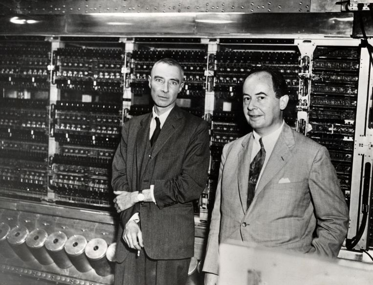

John von Neumann was een van de grootste wiskundigen met een Hongaars en Amerikaanse komaf uit de moderne geschiedenis. Hij was een baanbreker bij de toepassing van de operatortheorie op de kwantwummechanica en tijdens de Tweede Wereldoorlog
een zeer belangrijke lid van de Manhattanproject, de geheime operatie voor de ontwikkeling van de atoom bom. Veel natuurkundigen en wiskundigen, en dus oo Von Neumann, deden mee aan dat project.
John von Neumann werd geboren op 28 december in 1903 in Boedapest. Hij werd geboren als zoon van een bankier en studeerde aan de universiteit in zijn geboorteplaats op 23-jarige leeftijd af in de wiskunde. John studeerde ook scheikunde aan de univrsiteiten van
Zurich en Berlijn. Toen hij van 1930 tot 1933 als gastprofessor mechanische fysica aan de universiteiten van Princeton doceerde, was hij de jongste collega ooit van Albert Einstein. Na het behalen van zijn professoraat aan de IAS in Princeton, besloot hij voorgoed in de VS te blijven.
 Neumann had een inmensrijke geest en vrijwel de beste geheugen. In tegenstelling van het beeld dat menen hebben van slime mensen en de vrienden van John had hij een extraverte karakter en was hij dol op drinken, eten, dansen en plezier hebben.
Maar zoals ik al zei heeft hij veel gestudeerd en heeft hij vrijwel zeker een naam gekregen in de geschiedenis en nu nogsteeds. HIj had wiskundige bijdragen, hij had bijvoorbeeld bijdrage aan de verzamelingenleer, functionele analyse en mathemaische logica. Hij werkte ook aan speltheorie, dat toepassingen had in de economie en de sociale wetenschappen.
Wiskunde was niet het enige waarin hij een bijdrage leverde. Hij leverde zijn bijdrage natuurlijk ook in Informatica en computertechnoligieen. Von Neumann wordt vaak gecrediteerd voor het concept van de opgeslagen-programma computer. Hij speelde een cruciale rol in de ontwikkeling van de Elektronic Numerical Integrator and Computer, een van de vroegste algemene computers
De Von Neumann- achritectuur, die het programma- en datageheugen in een computer scheidt, is naar hem vernoemd en blijft een fundamenteel concept in de informatica. Verder op deze pagina gaan we het hier iets meer in verdiepen.
Je zult het niet geloven, maar hij had ook aanzienlike bijdrage aan de kwantummechanica, met name op kwantumlogica. Bovendien speelde hij ook een rol in de ecnomische vlak, met name op de speltheorie. Hij ontwikkelde het concept van 'minimax' strategieen in zero-sum spellen, wat toepassingen heeft in de besluitsvormingstheorie, economie en militaire strategieen.
John von Neumann zijn ontwerp werd beschreven in het rapport; "Het eerste ontwerp" van een computer EDVAC methode. Het rapport beschreef de architectuurdiagram die Von Neumann heeft gemaakt. De elektronische digitale computer bestond uit delen van verwerkingseenheden.
Die ondelen zijn;
Rekenkundige logische eenheid;
Registers van de processor;
De besturings eenheid mvat een instuctieregister en programmateller;
Een geheugen voor het opslaan van data;
Een extern opslagapparaat;
Input en Output mechanismen;
Dit ontwerpconcept is gebaseerd op de scheiding van gegevens en instructies in het geheugen en omvat de volgende belangrijke kenmerken: natuurlijk het hart van een computer, de CPU/ processor. Dit is het rekenkundige en logische brein van de computer. Het haalt instructies op uit het geheugen, decodeert ze, voert de bijbehorende bewerkingen uit en slaat de reslutaten terug op in het geheugen.
Ook bevat het ontwerp de Programmateller (Program Counter); de programmateller is een speciaal register in de CPU dat het adres van de volgende instructie bijhoudt die moet worden uitgevoerd. Hierdoor kan de CPU sequentieel door de programma stappen.
Zowel programma-instructies als gegevens worden opgeslagen in het hoofdgeheugen van de computer.
Dit geheugen is toegankelijk voor zowel lees- als schrijfoperaties. In het Von Neumann-ontwerp worden zowel programma-instructies als gegevens opgeslagen in binair formaat, wat betekent dat ze worden vertegenwoordigd door reeksen van nullen en enen.
Het John von Neumann-ontwerp is van onschatbare waarde gebleken voor de ontwikkeling van moderne computers, omdat het een gestandaardiseerde architectuur biedt die programmeurs in staat stelt om software te schrijven die op verschillende computers kan worden uitgevoerd, zolang ze voldoen aan de specificaties van de Von Neumann-architectuur. Hierdoor kunnen computers worden geprogrammeerd voor een breed scala aan toepassingen en taken, wat heeft bijgedragen
aan de revolutie in de informatietechnologie en de digitale wereld zoals we die vandaag kennen. John von Neumann werd hoogleraar aan het Institute for Advanced Study in Princeton, New Jersey, waar hij zijn werk in verschillende vakgebieden voortzette tot aan zijn overlijden. Hij overleed op 8 februari 1957 op 53-jarige leeftijd. Zijn werk heeft een diepgaande en blijvende invloed gehad op de wiskunde, informatica, economie en andere disciplines.